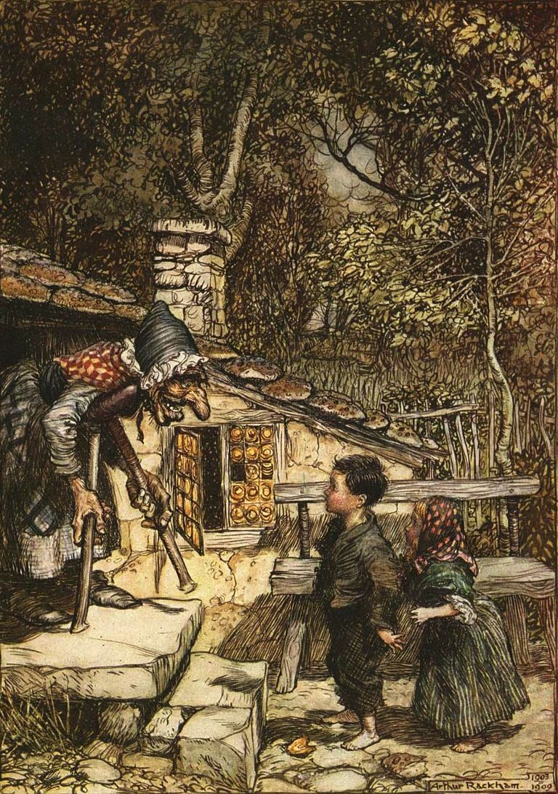

Near a great forest there lived a poor woodcutter with his wife and his two children. The little boy was called Hansel, and the little girl was called Gretel. He had little to bite and to break, and once when great dearth fell on the land, he could no longer procure even daily bread.
Now when he thought over this by night in his bed, and tossed about in his anxiety, he groaned and said to his wife: “What is to become of us? How are we to feed our poor children, when we no longer have anything even for ourselves?”...